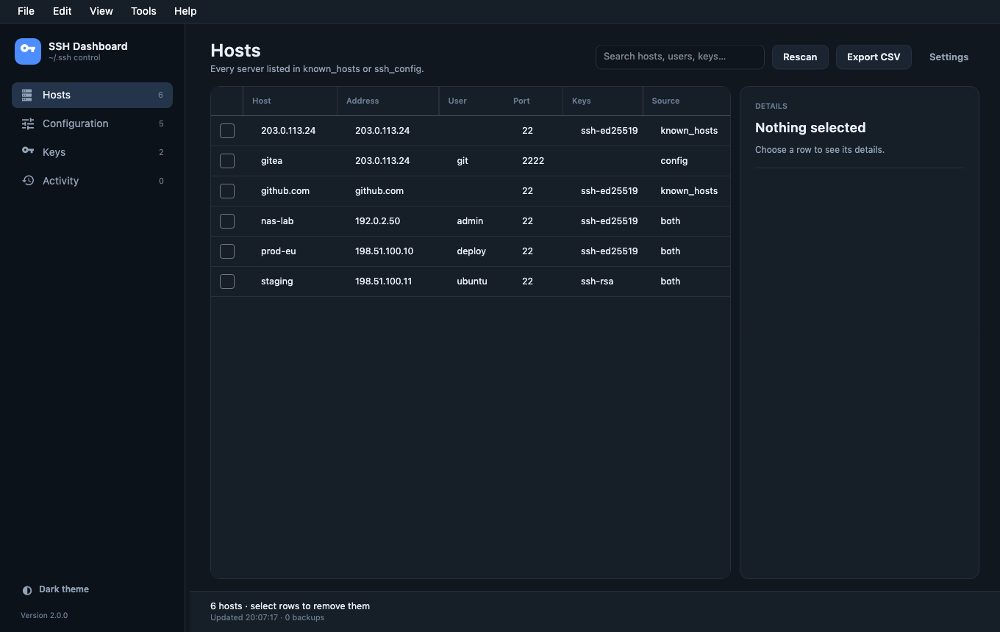
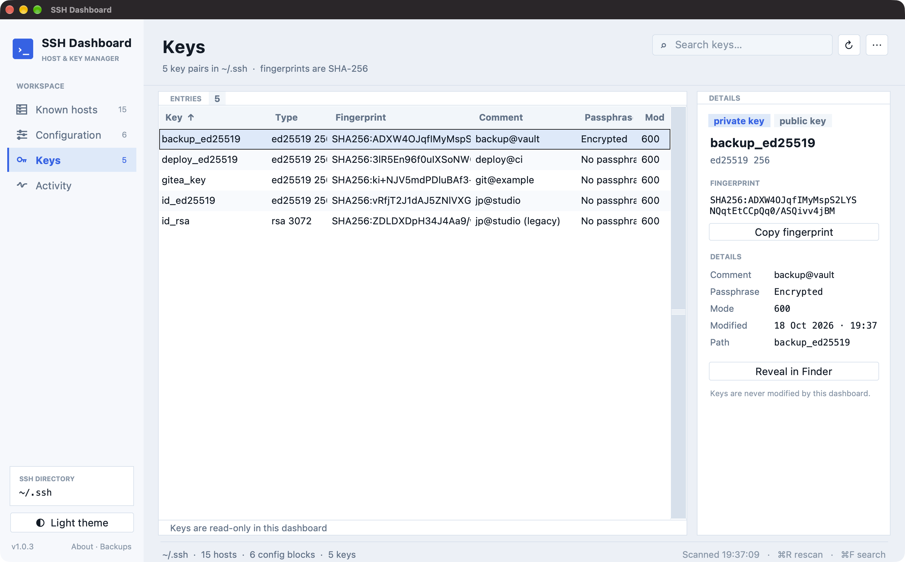

A careful dashboard for known_hosts, ssh_config and every key pair beside them. Inspect, add, edit, remove — with backups and a real terminal built in.
macOS 12+ · Windows 10/11 x64 · Linux x64 · Latest release

No more guessing which key belongs to which host, or which file a delete will touch.
Merges known_hosts and ssh_config, including Include files and hashed entries. Address, user, port, key type and source in one table.
Create a new ssh_config entry from the Configuration view, Tools menu or Cmd/Ctrl+N. Patterns, HostName, User, Port and IdentityFile — with a backup first.
SSH sessions run in a proper PTY inside the app. Resize the window and k9s, vim and htop follow. Copy, paste and mouse reporting work.
Private and public keys, SHA-256 fingerprints, permissions and PuTTY .ppk import — including passphrase-protected keys.
Every write is preceded by a timestamped backup. Undo restores every file touched by the last action, not just one.
System, dark and light themes. Resizable sidebar, table and details rail. Native macOS menu, Windows installer and Linux build.
A local journal of every removal, edit, import, undo and restore. No cloud, no telemetry, no account.
Open Files… in an SSH session and drag files or folders in, or use the native pickers. A live remote file browser with multi-select, hidden password prompt, progress, recursive copies, downloads straight to Downloads and a cleared source list.
SSH Dashboard is a tool for files that matter. It writes only inside ~/.ssh, and only after taking a backup.
Host * are read-only.
Self-contained builds. No .NET runtime, no package manager, no account.
shasum -a 256 <file> on macOS, sha256sum <file> on Linux, or certutil -hashfile <file> SHA256 on Windows.